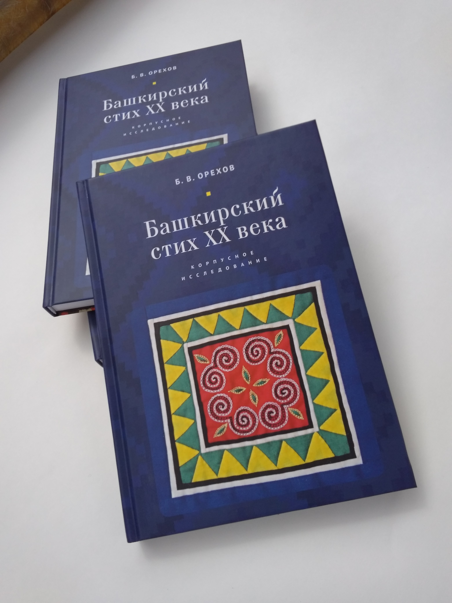
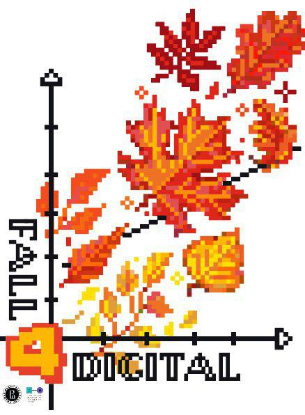

Вестник Digital Humanities, выпуск 13: круговорот DH в природе
13-й Вестник DH можно было суеверно пропустить, но мы решили просто сделать маленький информационный бюллетень. Некоторые важные события мира DH — в любимом формате «Было / Будет». Порядок хронологический
Было:
-
В издательстве «Алетейя» вышла книга Б.В. Орехова «Башкирский стих XX века. Корпусное исследование». При чем тут Digital Humanities, спросите вы — и зря! Уже во введении книги упомянуто «дальнее чтение» Франко Моретти, а в конце и вовсе появляется башкирская нейропоэзия... Но еще важнее то, что находится между первыми и последними страницами. Весь внушительный труд Б.В. Орехова представляет собой образец того высокого академического «цифрового литературоведения», к которому мы стремимся, но высот которого редко достигаем за недостатком времени, сил и упорства. Здесь же автор не пожалел ни того, ни другого, ни третьего. Говоря словами Бориса Ярхо, в каждый «математический акт» книги Б.В. Орехова «вложен конкретный литературоведческий смысл», а всесторонне «дальнее чтение» корпуса башкирской поэзии с помощью компьютерных методов предварено глубоким обзором тюркского стиховедения и опорой на достижения нескольких поколений исследователей стиха. Рекомендуем.

-
Издание «Системный Блокъ» и мастерская по анализу данных в социальных и гуманитарных науках «АнДан» провели хакатон по Digital Humanities на Летней школе (ЛШ). В суровых условиях «карикатуры южных зим» удалось осуществить несколько симпатичных микроисследований в режиме quick and dirty: от динамики «хайповых» тем в научных публикациях на ArXiv до гендерной демографии призыва во время Великой Отечественной войны.
-
DH-центр Вышки вместе с коллегами из ЮФУ, Университета Бремена, Днепровского национального университета и берлинской организации «КONTAKTE-KOHTAKTЫ» запустили проект «Terra Oblita» — вики-карту памяти забытых жертв нацизма. Кто такие «забытые жертвы»? Например, советские военнопленные, о которых почти не говорят на памятных мероприятиях ни в Германии, ни в России, хотя масштабы пленения в начале войны и уровень смертности в лагерях делают эту группу жертв одной из крупнейших. Материал для карты собирали в экспедициях студенты. Экспедиции организовывала эксперт и координатор DH-центра Софья Гаврилова.Теперь собранные в поездках данные нанесены на карту — и дополняются через модерируемый краудсорсинг. Поучаствовать в этом может каждый.
-
На основе семантической разметки проекта «Tolstoy.Digital» DH-центра Вышки и при поддержке Государственного музея Л.Н. Толстого группой энтузиастов запущен телеграм-канал From: Tolstoy, публикующий письма Льва Толстого в модном-молодежном оформлении — с меткими хэштегами и эмоджи. Для нас это в первую очередь свидетельство того, что если вы сделали более-менее внятную цифровую коллекцию, побороли энтропию в одном отдельно взятом уголке электронной вселенной, то применение этому рано или поздно найдется.
«The coolest thing to do with your data will be thought of by someone else» (R.Pollock).
-
Начали работу две новые магистратуры по Digital Humanities — в Высшей школе экономики в Москве и в Университете ИТМО в Санкт-Петербурге. Обе программы по формату довольно сильно отличаются от типового российского высшего образования: меньше формализма и иерархий в общении со студентами, молодое руководство, уклон в проектную деятельность. Примечательный факт: у обеих магистратур есть инстаграмы (Вышка, ИТМО), читать которые весело и увлекательно.
Будет:
-
IV Московско-тартуская школа по цифровым гуманитарным исследованиям «Fall 4 Digital» в Вороново (уже завтра, 19 октября). Следите за хэштегами #dhvoronovo и #fall4digital в нашем фейсбуке, телеграме, твиттере, вк и инстаграме.

-
Дни DH в ИТМО (этой зимой). Можно подавать заявки на воркшопы!
-
Всемирная конференция Digital Humanities 2020 в Оттаве (22-24 июля 2020-го). Дедлайн продлен до 22 октября, спешите подаваться.
-
Всеевропейская конференция EADH в КРАСНОЯРСКЕ! (в сентябре 2020-го) Поздравляем коллег из Сибирского федерального университета!
Отчет о IV Московско-тартуской школе и больше анонсов DH-мероприятий — в следующем выпуске рассылки «Вестник Digital Humanities».
Ваш (уже практически уехавший в Вороново)
Центр цифровых гуманитарных исследований НИУ ВШЭ